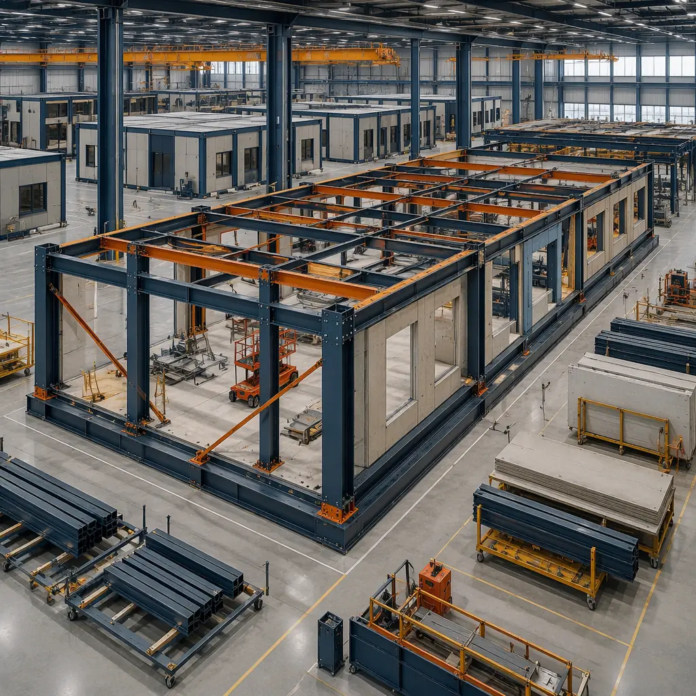
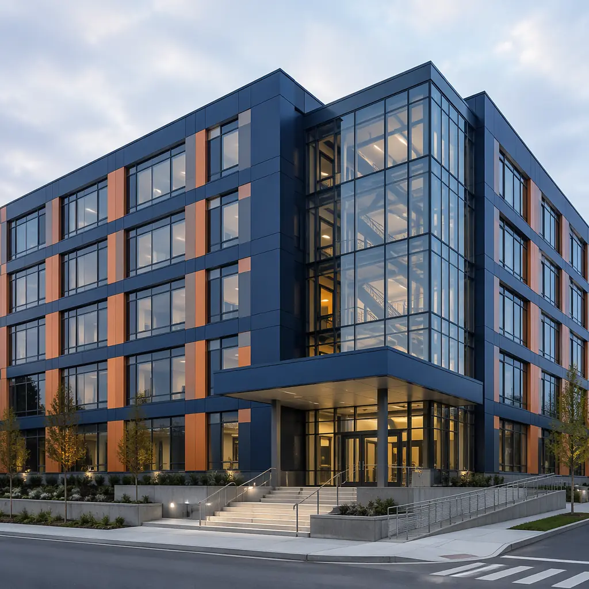
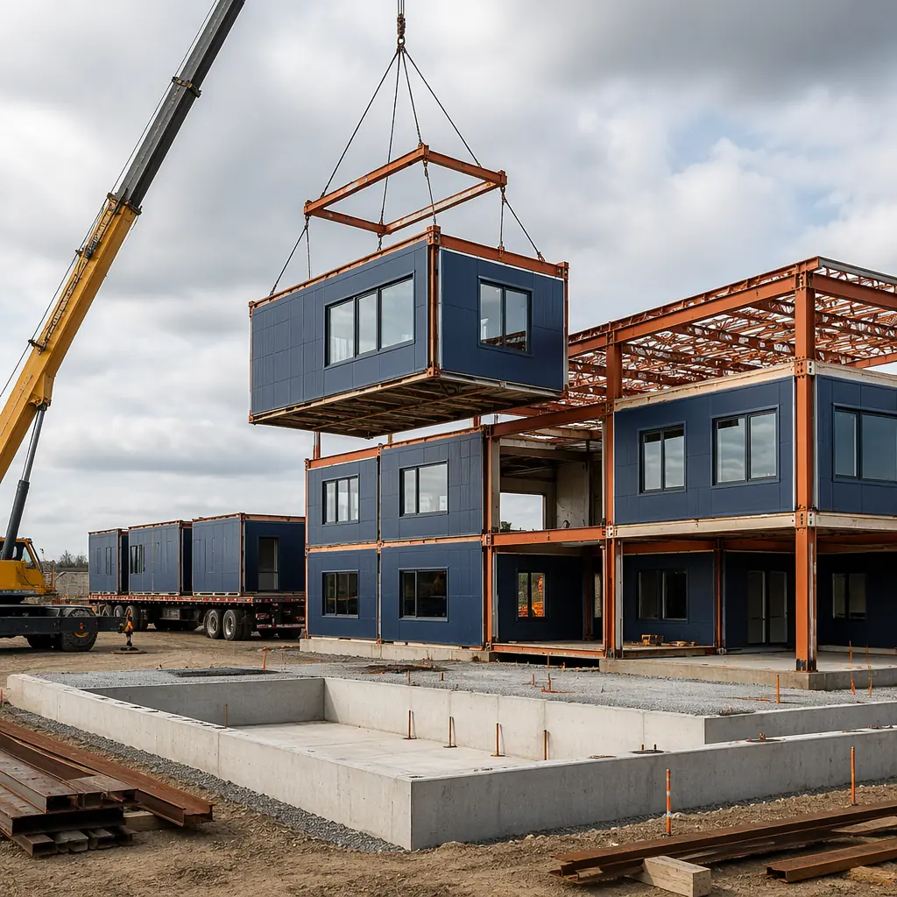
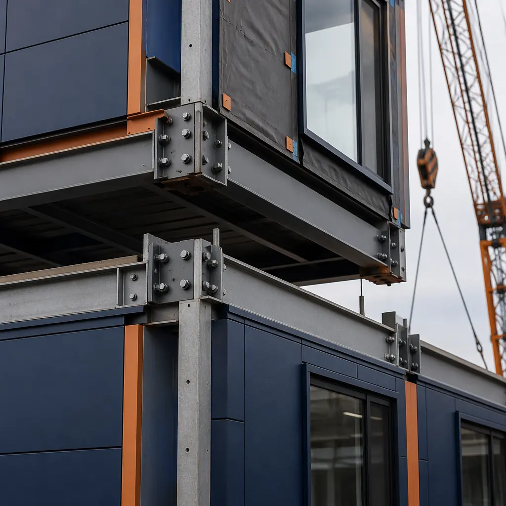

US state and local governments spend approximately $380 billion annually on construction and infrastructure — more than the total revenue of the top 10 US commercial contractors combined — yet public sector projects average 22% schedule overruns and 16% cost overruns according to McKinsey Global Institute analysis of 3,500 public infrastructure projects worldwide. A traditional ground-up municipal building — police station, firehouse, courthouse annex, or civic center — takes 24-48 months from bond issuance to occupancy certificate, with every month of delay directly consuming public funds that could otherwise serve constituents. Modular prefabricated construction cuts the on-site build phase from 14-22 months to 7-11 months — a 50% reduction — by manufacturing 70-80% of the building in a factory while site foundations are prepared concurrently. For a municipality financing a $12 million fire station at 4.5% municipal bond rates, compressing the construction period by 8 months saves approximately $360,000 in interim interest costs alone — funds that stay in the general budget for police, parks, and schools.

Why Government Construction Projects Face Unique Challenges That Modular Solves
Public sector construction operates under constraints that private development doesn't face — and these constraints create structural advantages for modular delivery:
- Fixed budget windows and bond cycle deadlines are non-negotiable: When voters approve a $45 million school bond or a city council allocates capital improvement funds for a new police precinct, the budget is fixed and the clock starts. Traditional construction's schedule variability — weather delays, subcontractor sequencing gaps, material lead-time surprises — creates exposure to budget overruns that require politically painful supplemental appropriations. Modular construction's factory-controlled production schedule removes the three largest sources of public project delay: weather (modules are built indoors), trade stacking (70% of labor happens in the factory on a stable production line), and material procurement volatility (factory inventory management smooths supply chain disruptions). The result is delivery-date certainty that aligns with the fiscal-year discipline public agencies require.
- Prevailing wage and workforce availability compound in traditional builds: Davis-Bacon prevailing wage requirements apply to federally funded projects, and 32 states have their own prevailing wage laws. On traditional construction sites, these requirements interact with skilled labor shortages to create wage escalation risk — a project budgeted at 2023 wage rates may face 2025 rates by the time electricians and plumbers are sequenced on site. Modular construction concentrates 70% of labor hours in a permanent factory workforce operating at stable, predictable labor rates. The factory's year-round employment model attracts and retains skilled tradespeople who would otherwise cycle between project sites — directly addressing the construction labor shortage that has left 500,000 positions unfilled across the US.
- Site disruption creates political liability for elected officials: A traditional courthouse renovation or police station construction project generates 18-24 months of construction traffic, noise, dust, and fenced-off public space in the middle of a community. Constituent complaints about construction disruption land on city council desks and become election issues. Modular construction compresses on-site activity to 6-10 weeks of module setting and connection — after which the building is weathertight and interior finishes proceed quietly inside. This 80% reduction in on-site disruption duration directly reduces political risk for the elected officials who approved the project.
- Public procurement rules favor fixed-price, performance-based contracts: Government procurement offices are designed to prevent cost overruns through competitive bidding, but traditional construction's change-order culture — averaging 10-15% of contract value on public projects according to the National Association of State Facilities Administrators — undermines the fixed-price intent of public bidding. Modular construction's factory environment reduces change orders to 2-4% because design decisions are finalized before production begins. The building's components are manufactured to precise specifications under ISO 9001 quality systems — the same quality framework that public agencies already trust for defense contracting, medical equipment, and infrastructure materials. This design-finalization-before-construction model aligns with the Government Accountability Office's best practices for public capital projects.
These challenges compound at the program level. A county planning 5 new facilities — sheriff substation, health department clinic, records annex, emergency operations center, and fleet maintenance building — faces a cascade of interdependent risks across 5 separate project schedules. Modular construction's production-line repeatability transforms this from 5 independent gambles into one predictable program. The learning curve benefits we documented in our analysis of modular versus traditional construction timelines show that factory productivity improves 12-18% from the first building to the fifth in a multi-facility program — a compounding advantage that traditional site-built construction cannot replicate because each project starts from scratch with a new crew, new weather, and new site conditions.

Government Building Types Where Modular Delivers the Strongest Public Value
Public Safety Facilities — Police Stations and Firehouses
Police stations and fire stations are among the most programmatically complex municipal buildings: they combine administrative office space, 24/7 operational areas, evidence storage with chain-of-custody requirements, detention facilities, and specialized equipment bays — all within a single facility that must remain partially operational during construction when replacing an existing station. A traditional 25,000 sq ft police precinct takes 18-22 months to build on site. Modular construction compresses this to 10-12 months by manufacturing the administrative wings, community meeting rooms, and evidence processing areas as factory-built modules while the specialized detention and sally port areas are constructed on the prepared foundation. The reduction in on-site activity duration is particularly valuable for in-place replacements where the existing station must continue operating adjacent to the construction site — a 10-month site presence versus 18-22 months halves the security and operational disruption.
Fire stations present unique structural requirements — 55-foot apparatus bay clear spans, vehicle exhaust capture systems, and rapid-response circulation paths — that modular construction addresses through hybrid design: steel-framed apparatus bay modules manufactured to fire service structural standards (250 PSF floor loading to accommodate 80,000-pound ladder trucks) paired with administrative and living-quarter modules built to commercial occupancy standards. The apparatus bay modules arrive on site with pre-installed vehicle exhaust systems, compressed air fill stations, and hose drying towers — eliminating 6-8 weeks of sequential mechanical contractor work on site.
Administrative & Civic Centers
County administration buildings, city halls, and multi-department civic centers represent the largest single category of municipal capital expenditure — and the category where modular construction's production-line quality control delivers the most visible value. A 60,000 sq ft county administration building housing the assessor, treasurer, clerk, planning department, and board chambers typically requires 24-30 months of traditional construction. Modular delivery compresses this to 14-16 months while providing superior acoustic separation between departments — a critical factor in buildings where confidential tax records, personnel matters, and public hearings must coexist without sound transmission between adjacent spaces.
MODURA's civic center modules incorporate factory-installed acoustic isolation rated at STC 55 between departmental wings — exceeding the STC 50 minimum specified in GSA P100 facilities standards for federal buildings — because each module's wall assembly is constructed and tested under factory quality control rather than field-constructed with the variability inherent in on-site drywall and insulation installation. The data cabling pathways, HVAC zoning dampers, and access control conduit are pre-installed in the factory, eliminating 4-6 weeks of sequential low-voltage and mechanical contractor work on site. For municipalities concerned about long-term maintenance costs — a recurring theme in our analysis of modular construction financing models — factory-installed MEP systems with documented commissioning data provide auditable maintenance baselines that reduce facility management costs over the building's 50-year service life.

Public Health Clinics & Community Health Centers
Public health departments operate under clinical standards — HIPAA compliance, infection control, laboratory ventilation, medical gas systems — that add 20-30% to construction costs compared to standard commercial buildings. Modular construction is particularly well-suited to clinical environments because factory-built modules achieve the precise HVAC zoning, positive/negative pressure differentials, and surface finish requirements that healthcare facilities demand without the field-coordination complexity that drives up traditional healthcare construction costs by 40-50% above standard commercial rates.
A 15,000 sq ft public health clinic with 12 exam rooms, a phlebotomy lab, immunization suite, and behavioral health counseling offices can be deployed in 8-10 months using modular construction versus 16-20 months traditionally. Each clinical module arrives with factory-installed medical gas rough-in (oxygen and vacuum), nurse call conduit, and exam room sink plumbing — reducing on-site MEP coordination from a 6-week sequential process to a 2-week connection and commissioning phase. This approach draws on the same factory precision we apply to modular healthcare facility construction, where infection control and clinical workflow requirements demand the same quality assurance framework that government health agencies require.
For rural and underserved communities — where public health clinics are often the only healthcare access point within a 50-mile radius — modular construction's compressed timeline addresses the critical problem of construction-phase service disruption. A traditional clinic replacement project forces the community to rely on temporary trailers or distant facilities for 18-24 months. Modular construction reduces this gap to 6-8 months — a year of restored healthcare access for communities that can least afford it.
Courthouses & Judicial Annex Buildings
Courthouses represent the most security-intensive municipal building type: separate circulation paths for judges, defendants, jurors, and the public; ballistic-resistant construction at judicial benches and clerk counters; secure holding cells with direct courtroom access; and SCIF-level acoustics for grand jury and chambers spaces. Traditional courthouse construction costs average $550-750/sq ft — 2-3x standard commercial construction — due to the density of specialized systems and the sequential coordination complexity of security, AV, and MEP contractors working in confined secure zones.
Modular construction addresses courthouse complexity by shifting the coordination of these systems into the factory. Secure holding cell modules arrive with pre-installed tamper-resistant fixtures, continuous-weld steel wall panels, and integrated CCTV/duress alarm conduit. Courtroom modules incorporate factory-built millwork for judicial benches, jury boxes, and attorney tables — eliminating 8-10 weeks of on-site finish carpentry that traditionally controls the critical path of courthouse projects. The factory environment also enables background checks and security clearances for the production workforce — a requirement for buildings handling classified or sensitive proceedings — that is far more manageable for a permanent factory workforce than for a rotating cast of site-based subcontractors. This model parallels the quality assurance framework in our discussion of construction ROI across building types, where factory-controlled production eliminates the schedule and cost variability that disproportionately impacts specialized facility types.

Procurement and Compliance: How Modular Meets Government Standards
| Compliance Requirement | Traditional Construction | Modular Construction |
|---|---|---|
| Competitive bidding / public procurement | Multiple prime contractors, 3-6 month bid cycle | Single design-build contract, 2-3 month bid cycle, GSA-compatible procurement formats |
| Davis-Bacon prevailing wages | Certified payroll across 10-15 subcontractors | Factory workforce at stable rates + site crew, simplified compliance reporting |
| Buy America / domestic content | Individual material certifications | Steel sourced from US mills, module fabrication under one roof — simplified chain-of-custody |
| Building code / IBC compliance | Field inspections at each phase | Factory QA + third-party inspection in-plant + site connection inspections |
| Energy code / ASHRAE 90.1 | Field-verified envelope commissioning | Factory-tested insulation integrity, blower-door results documented per module |
| LEED / green building mandates | Documentation assembled post-construction | Construction waste <5% (MRc5 points), factory IAQ management (EQc3.1), streamlined LEED documentation |
| ADA / accessibility compliance | Field-verified dimensions | Factory-jigged door widths, turning radii, and counter heights — verified in-plant |
| Security clearances (courts, EOCs) | Rotating contractor workforce, repeated background checks | Permanent factory workforce, one-time clearance program |
For municipalities pursuing green building mandates — increasingly common as 24 states and over 200 cities have adopted LEED certification requirements for public buildings — modular construction's factory environment provides a documented sustainability advantage. Construction waste diversion rates exceed 95% in a factory setting (MRc5: Construction Waste Management), factory IAQ management during module assembly prevents moisture and mold issues that plague site-built projects (EQc3.1: Construction IAQ Management Plan), and the embodied carbon reduction from minimized on-site transportation and material waste aligns with the growing adoption of embodied carbon limits in public procurement — a trend explored in depth in our examination of sustainable modular construction practices and their alignment with institutional ESG requirements.

Cost Comparison: Modular vs. Traditional for Municipal Projects
Public sector cost analysis must look beyond the bid tab to capture the full fiscal impact — including interim financing costs, escalation risk, and the operational cost of temporary facilities during construction:
| Cost Category | Traditional | Modular | Public Sector Impact |
|---|---|---|---|
| Hard construction ($/sq ft, civic center) | $320-420 | $330-430 | +2-4% hard cost, offset by financing and schedule savings |
| Bond interest during construction (4.5% muni rate) | 24-30 months of interest accrual | 14-16 months of interest accrual | $360K-540K saved on $12M project (8-14 months saved) |
| Escalation contingency (annual) | 4-6% per year across 2-2.5 years | 2-3% across 1-1.3 years | $180K-360K escalation risk eliminated on $12M project |
| Temporary facilities (trailers, relocation) | 18-24 months of temp space | 8-12 months of temp space | $120K-240K saved (10-12 months less temp facility cost) |
| Change orders (% of contract) | 10-15% (NASFA average for public projects) | 2-4% | $480K-880K avoided on $8M base contract |
| Political/community disruption cost | 18-24 months of construction impact | 6-10 weeks of heavy site activity, then interior work | Intangible but real: reduced constituent complaints, project support maintained |
The total cost of ownership advantage extends beyond construction. A modular government building's factory-documented MEP systems, envelope integrity, and structural connections create an auditable facility baseline that simplifies the preventive maintenance programs public works departments are required to maintain under GASB 34 asset management standards. The 50-year lifecycle cost — the metric that matters to taxpayers — benefits from the same factory quality advantage that makes modular construction economically compelling for private developers, as we detailed in our comprehensive developer ROI analysis.
Is Modular Right for Your Municipal Project?
Modular construction delivers the strongest public value when your project exhibits these characteristics:
- Facility size 10,000-80,000 sq ft: The range where module count (10-40) achieves factory production-line efficiency and the schedule compression versus traditional construction is most dramatic for public sector building types
- Multi-facility capital program: When a county or city is planning 3+ facilities — the factory learning curve reduces cost per building by 8-12% from the first to the fifth, a compounding efficiency that site-built construction cannot replicate
- Occupied-campus or in-place replacement: When the existing facility must remain operational during construction — police stations, firehouses, and health clinics where service continuity is non-negotiable — modular's compressed on-site duration reduces operational disruption by 50-60%
- Fixed budget with hard deadline: Bond-funded projects, grant-funded facilities, and state legislative appropriations that lose funding if not completed by fiscal-year deadlines — modular's schedule certainty eliminates the single largest risk to public project funding
- LEED or green building mandates: Municipalities with adopted green building ordinances benefit from modular's factory-documented waste diversion, IAQ management, and embodied carbon data — all of which streamline LEED documentation compared to assembling field-verified data from multiple subcontractors
For one-off landmark civic buildings — city halls designed as architectural statements with complex custom geometries — traditional construction remains the appropriate delivery method. But for the 80% of municipal building stock that consists of functional, repeatable facility types — police precincts, fire stations, health clinics, administrative offices, and courthouse annexes — modular construction delivers the combination of schedule certainty, cost predictability, and quality documentation that public stewardship demands. In an era where infrastructure funding is abundant but construction capacity is constrained, the municipalities that build faster are the ones that serve their constituents sooner.
MODURA brings 500+ completed modular projects across 18 countries and 4 ISO 9001/14001 certified factories to every government engagement. Whether you're planning a single fire station or a county-wide capital improvement program, contact our public sector team for a free feasibility assessment including site analysis, procurement strategy, and a modular delivery timeline tailored to your project's funding cycle and operational requirements.